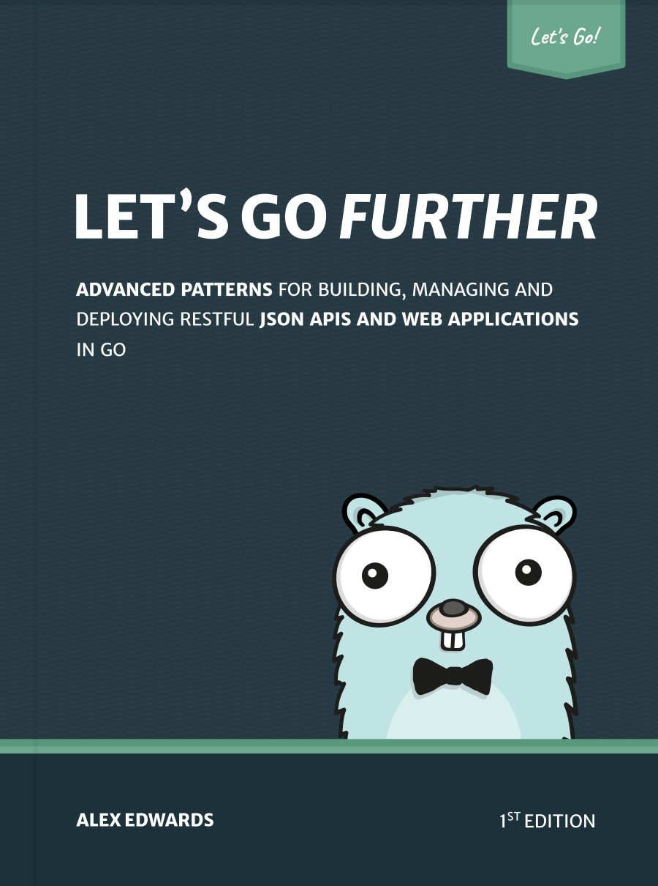

پیشگفتار

این کتاب به شما کمک میکند دانش Go خود را فراتر از مبانی گسترش دهید — با الگوهای پیشرفته برای توسعه، مدیریت و استقرار APIها و برنامههای وب.
ایده پشت این کتاب همان یادگیری با انجام دادن است. ما با هم ساخت یک API مدرن مبتنی بر JSON را از ابتدا تا انتها طی میکنیم — از راهاندازی پروژه تا استقرار در محیط تولید. برنامهای که میسازیم Greenlight نام دارد؛ یک API برای دریافت و مدیریت اطلاعات فیلمها.
در کنار موضوعات بنیادی مثل ارسال و دریافت دادهٔ JSON، این کتاب به عمق میرود و الگوهای عملی و بهترین روشها را برای قابلیتهای پیشرفتهتری مثل خاموش شدن آرام (graceful shutdown)، مدیریت وظایف پسزمینه، گزارش معیارها (metrics)، احراز هویت کاربران، و موارد دیگر بررسی میکند. در پایان کتاب، API نهایی را روی یک سرور لینوکسی مستقر میکنیم.
در پایان این کتاب، شما دانش لازم برای ساخت APIهای قوی و حرفهای — که میتوانند بهعنوان بکاند برای SPAها و اپلیکیشنهای موبایل عمل کنند — را خواهید داشت.
اگر Let’s Go را خواندهاید و از آن لذت بردهاید، این کتاب گام بعدی ایدهآلی در مسیر یادگیری شماست. اگر هنوز جلد اول را نخواندهاید، پیشنهاد میکنم ابتدا با Let’s Go شروع کنید.
ویرایشگر متن خود را باز کنید و کدنویسی موفق باشید!
درباره این ترجمه
پس از اتمام ترجمهٔ Let’s Go، طبیعی بود که سراغ جلد دوم هم بروم. همان روشی را ادامه دادم: ترجمهٔ اولیه با کمک هوش مصنوعی، و بعد بازخوانی و روانسازی دستی هر بخش. متن و سورس این ترجمه در گیتهاب نیز منتشر شده است.
اگر وسط مطالعه به غلط املایی، اصطلاح نامفهوم، یا جملهای که روان نیست برخوردید، حتماً به من بگویید — خیلی خوشحال میشوم. میتوانید از طریق ایمیل، تلگرام، لینکدین، یا گیتهاب با من در میان بگذارید.
این ترجمه بهصورت تدریجی منتشر میشود. اگر میخواهید از پیشرفت آن مطلع شوید، مخزن گیتهاب را دنبال کنید.